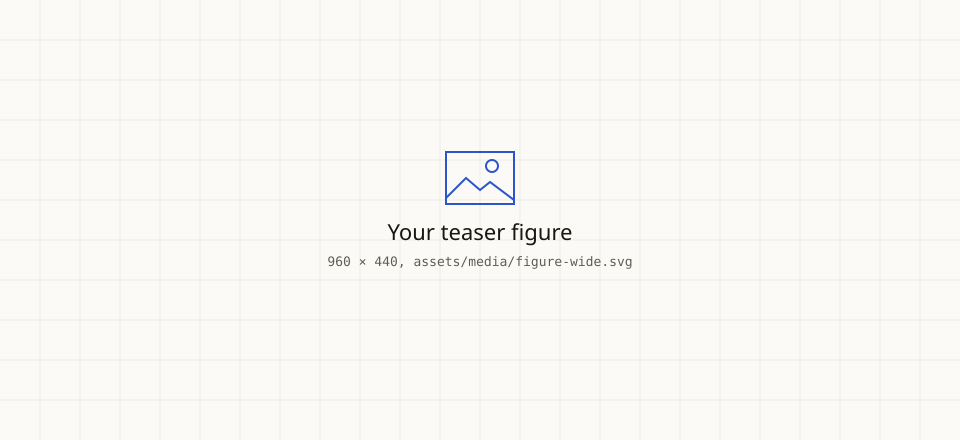
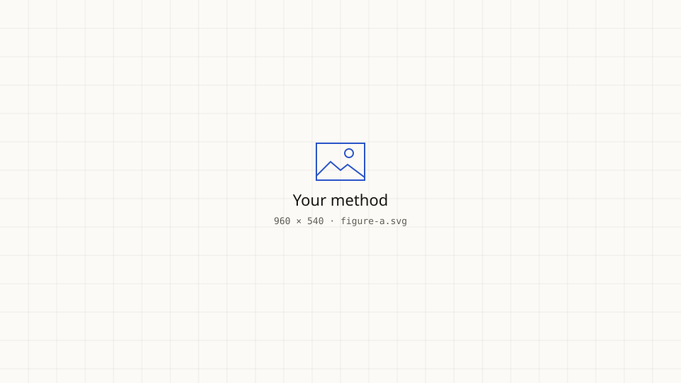
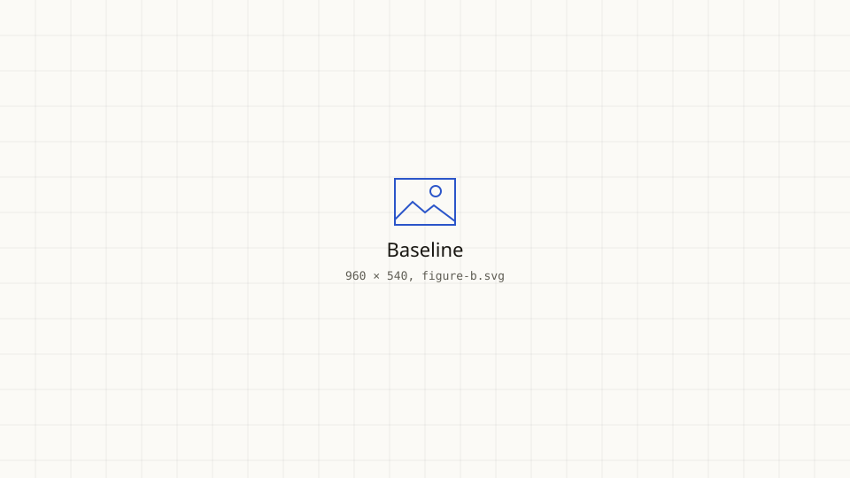

OralConference Name 2026 · Track
Your paper title goes here
Project Name does one thing worth a sentence. Use this paragraph to pitch the paper in two or three lines: the problem, what you did, and the result a reader should remember. Want to see it filled in? Open the example page.
A one-line hook that frames the paper. Put the usual view first, then what yours changes.
Paste your abstract here. The right column reads well at two or three short paragraphs; break a long abstract where the argument turns, usually between the problem and the method.
The second paragraph can carry the method and the headline result. Keep numbers in the stats strip below, so this text stays readable.
01Method

assets/media/figure-wide.svg with your teaser; PNG, JPG, SVG and WebP all work.A subsection heading
Explain the method in plain paragraphs. Section headings get a mono number on the left; change it in the .sn span, or delete the span.
Inline styles are ready: links, bold, italics and inline code.
02Results
One or two lines on what the number means and what it is compared against.
Keep each finding to a single claim, so the three read as a set.
Units go in a <sub> so they sit small next to the number.
Video
<video> for clips you host. With data-autoplay it plays muted and only while on screen.Side by side


The one sentence you want readers to repeat after they close the tab.
03Cite this work
@inproceedings{author2026paper,
title = {Paper Title: A Short, Memorable Subtitle},
author = {Author, First and Author, Second and Author, Third and Author, Last},
booktitle = {Conference Name},
year = {2026}
}